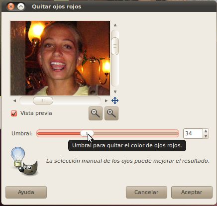
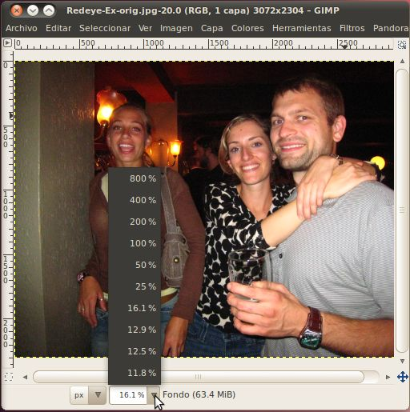
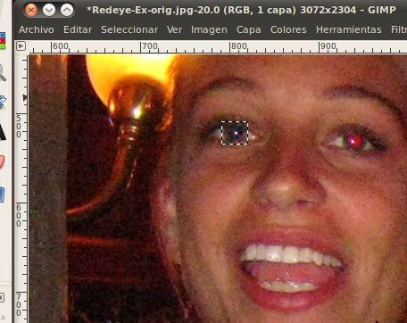
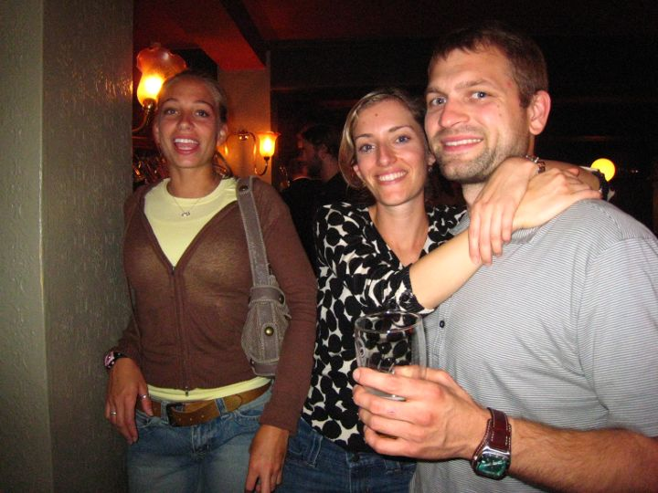

Selección y Corrección de Ojos Rojos
Todos hemos visto fotos en el pasado en las que los ojos del sujeto(s) no
son normales, sino que su color es rojo brillante. Pueden haber varios
niveles de esto que van desde apenas detectable hasta un rojo muy
brillante.
Esto es causado cuando la luz del flash de la cámara se refleja en los
vasos sanguíneos en la parte posterior del ojo y de nuevo hacia la cámara.
Para obtener más información, consulte: http://es.wikipedia.org/wiki/Efecto_de_ojos_rojos,
http://en.wikipedia.org/wiki/Red-eye_effect
Como se trata de un problema tan común en las fotografías, el GIMP
ha construido una herramienta para la eliminación de este problema, y es con lo que vamos a
trabajar en esta sección.
En primer lugar, vamos guardar este archivo en el disco,
y ábrirlo con el GIMP.

Puedes ver que hay tres ejemplos de ojos rojos (Redeye o Red
Eye) aquí. Dos de ellos (la mujer de la izquierda y el hombre) tiene una
gran
cantidad, y la mujer en el centro sólo cuenta con una muestra pequeña.
Para
corregir los ojos rojos, vamos a ejecutar la herramienta de eliminación
de ojos rojos. Lo puedes encontrar en Filtros (Filters) ->
Realzar
(Enhance) -> Quitar ojos rojos...

Si
todo funciona bien, debes ser capaz de simplemente hacer clic en el botón y
hacer que se elimine todos los ojos rojos. Vaya e inténtelo.
Ahhhh! ¿Qué ha pasado!? Parece que la gente tiene moho creciéndole en la piel, es terrible.

Lo que la herramienta hizo fue ir a través de toda la foto
y encontrar todos los lugares donde había una gran cantidad de rojo, y
trató de eliminarlo. Lamentablemente en esta foto había un montón
de
lugares así...los labios de la gente, la cara de mujer a la
izquierda, la pared en el fondo, etc. Usted podría tratar de usar
el
control deslizante para reducir el umbral para que no se recoja
tanto rojo, pero eso no funciona muy bien para esta imagen tampoco; tratemos esa opción de todos modos.
Esta vez vamos utilizar la
ventana de previsualización para acercamos a la cara de la mujer a la
izquierda. Al mover el control deslizante, verás que antes de que
mayoría
de el rojo de sus ojos se haya ido, le van a aparecer colores extraños
en los labios.

Debido a esto, en lugar de simplemente utilizar esta herramienta, vamos a tener
que intentar una táctica diferente para arreglar esta imagen. Vamos
a
utilizar la herramienta de selección para seleccionar sólo los ojos, y a
continuación usaremos la herramienta de ojos rojos sólo en la zona
seleccionada. Pronto veremos que el uso de la herramienta de
selección es muy potente y la posibilidad de seleccionar determinadas
zonas de fotos hace posibles casi todas las cosas que usted puede hacer
posible con el GIMP. Incluso el recorte que hicimos en la última
sección es sólo un conjunto de funciones especiales basadas en la
herramienta de selección; de hecho, usted puede hacer todas las cosas
que hicimos en la última sección, simplemente haciendo una selección y
luego haciendo clic en Imagen -> Recortar a la selección.
Vamos a empezar por seleccionar la herramienta de selección rectangular
de la caja de herramientas.

Esta herramienta es casi exactamente igual a a
herramienta de recorte en cuanto a la forma en que se usa, excepto que cuando haya terminado de usarla usted tendrá sólo una
selección de la imagen, en vez de una imagen más pequeña. Vamos a
utilizar
la herramienta para crear un rectángulo alrededor de uno de los ojos de la mujer de
la izquierda. Utiliza el zoom si es necesario, para aseguarte de no seleccionar más de lo necesario.
Hay varias formas de hacer zoom en el GIMP, pero la más
fácil de usar es probablemente sólo hacer clic en el cuadro de zoom qye está en la
barra inferior de la imagen, y seleccionar el tamaño que
desee.


Si ahora haces clic dentro de la selección (o pulsas Intro/Enter) la
selección se pegará, pero no es necesario hacer esto, ya que puedes ejecutar las
herramientas en la selección incluso antes de que se pegue.
Ahora vamos a volver a ejecutar el filtro de reducción de ojos rojos
(Filtros -> Realzar -> Quitar ojos rojos...). Esta
vez
podemos aumentar el umbral de un poco más, porque no hay mucho más
que sea muy rojo en esta selección de la imagen.

Ahora que sabemos cómo hacer esto, podemos seguir y hacerlo a los otros
cinco ojos en la imagen.

Yo diría que se ve mucho mejor! No es todavía una gran fotografía,
pero al menos no se ven como si estuvieran poseídos por algún demonio.
Reconocimiento
Three Friends, Russell Harrison, http://www.flickr.com/photos/rharrison/1467377710/,
CC-BY-SA
Two Dancers, Russell Harrison, http://www.flickr.com/photos/rharrison/1551648804/,
CC-BY-SA
Voo Doo Music Fest, Katrina Szela, http://www.flickr.com/photos/93017934@N00/287761814/,
CC-BY
Mike Roe with Julie and Audrey Quinn, James Emery, http://www.flickr.com/photos/emeryjl/891366632/,
CC-BY